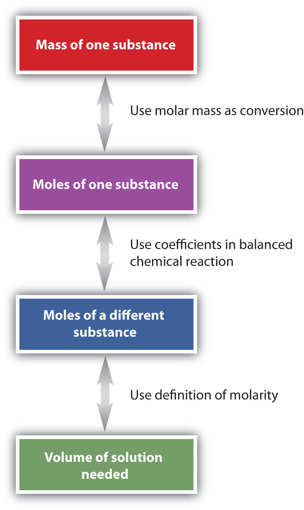

If you watch any of the medical dramas on television, you may have heard a doctor (actually an actor) call for an intravenous solution of “Ringer’s lactate” (or “lactated Ringer’s”). So what is Ringer’s lactate?
Intravenous (IV) solutions are administered for two main reasons: (1) to introduce necessary substances into the bloodstream, such as ions for proper body function, sugar and other food substances for energy, or drugs to treat a medical condition, and (2) to increase the volume of the bloodstream. Many people with acute or long-term medical conditions have received some type of an IV solution.
One basic IV solution, called a normal saline solution, is simply a dilute solution of NaCl dissolved in water. Normal saline is 9.0 g of NaCl dissolved in each liter of solution. (The reason for this particular concentration is explained in Section 9.4 "Properties of Solutions".)
Ringer’s lactate is a normal saline solution that also has small amounts of potassium and calcium ions mixed in. In addition, it contains about 2.5 g of lactate ions (C3H5O3−) per liter of solution. The liver metabolizes lactate ions into bicarbonate (HCO3−) ions, which help maintain the acid-base balance of blood. (Acids and bases are discussed in Chapter 10 "Acids and Bases".) Many medical problems, such as heart attacks and shock, affect the acid-base balance of blood, and the presence of lactate in the IV solution eases problems caused by this imbalance.
Physicians can select from a range of premade IV solutions, in accordance with a patient’s particular needs. Ringer’s lactate is commonly used when a patient’s blood volume must be increased quickly. Another frequently used IV solution, called D5W, is a 5% solution of dextrose (a form of sugar) in water.
Solutions are all around us. Air, for example, is a solution. If you live near a lake, a river, or an ocean, that body of water is not pure H2O but most probably a solution. Much of what we drink—for example, soda, coffee, tea, and milk—is at least in part a solution. Solutions are a large part of everyday life.
A lot of the chemistry occurring around us happens in solution. In fact, much of the chemistry that occurs in our own bodies takes place in solution, and many solutions—such as the Ringer’s lactate IV solution—are important for our health. In our understanding of chemistry, we need to understand a little bit about solutions. In this chapter, you will learn about the special characteristics of solutions, how solutions are characterized, and some of their properties.
A solutionAnother name for a homogeneous mixture. is another name for a homogeneous mixture. Chapter 1 "Chemistry, Matter, and Measurement" defined a mixture as a material composed of two or more substances. In a solution, the combination is so intimate that the different substances cannot be differentiated by sight, even with a microscope. Compare, for example, a mixture of salt and pepper and another mixture consisting of salt and water. In the first mixture, we can readily see individual grains of salt and the flecks of pepper. A mixture of salt and pepper is not a solution. However, in the second mixture, no matter how carefully we look, we cannot see two different substances. Salt dissolved in water is a solution.
The major component of a solution, called the solventThe major component of a solution., is typically the same phase as the solution itself. Each minor component of a solution (and there may be more than one) is called the soluteThe minor component of a solution.. In most of the solutions we will describe in this textbook, there will be no ambiguity about whether a component is the solvent or the solute.) For example, in a solution of salt in water, the solute is salt, and solvent is water.
Solutions come in all phases, and the solvent and the solute do not have to be in the same phase to form a solution (such as salt and water). For example, air is a gaseous solution of about 80% nitrogen and about 20% oxygen, with some other gases present in much smaller amounts. An alloyA solid solution of a metal with other substances dissolved in it. is a solid solution consisting of a metal (like iron) with some other metals or nonmetals dissolved in it. Steel, an alloy of iron and carbon and small amounts of other metals, is an example of a solid solution. Table 9.1 "Types of Solutions" lists some common types of solutions, with examples of each.
Table 9.1 Types of Solutions
| Solvent Phase | Solute Phase | Example |
|---|---|---|
| gas | gas | air |
| liquid | gas | carbonated beverages |
| liquid | liquid | ethanol (C2H5OH) in H2O (alcoholic beverages) |
| liquid | solid | saltwater |
| solid | gas | H2 gas absorbed by Pd metal |
| solid | liquid | Hg(ℓ) in dental fillings |
| solid | solid | steel alloys |
What causes a solution to form? The simple answer is that the solvent and the solute must have similar intermolecular interactions. When this is the case, the individual particles of solvent and solute can easily mix so intimately that each particle of solute is surrounded by particles of solute, forming a solution. However, if two substances have very different intermolecular interactions, large amounts of energy are required to force their individual particles to mix intimately, so a solution does not form.
This process leads to a simple rule of thumb: like dissolves like. Solvents that are very polar will dissolve solutes that are very polar or even ionic. Solvents that are nonpolar will dissolve nonpolar solutes. Thus water, being polar, is a good solvent for ionic compounds and polar solutes like ethanol (C2H5OH). However, water does not dissolve nonpolar solutes, such as many oils and greases (Figure 9.1 "Solubility").
We use the word solubleA solute that dissolves in a particular solvent. to describe a solute that dissolves in a particular solvent, and the word insolubleA solute that does not dissolve in a particular solvent. for a solute that does not dissolve in a solvent. Thus, we say that sodium chloride is soluble in water but insoluble in hexane (C6H14). If the solute and the solvent are both liquids and soluble in any proportion, we use the word miscibleLiquids that dissolve in each other., and the word immiscibleLiquids that do not dissolve in each other. if they are not.
Water is considered a polar solvent. Which substances should dissolve in water?
Solution
Because water is polar, substances that are polar or ionic will dissolve in it.
Toluene (C6H5CH3) is widely used in industry as a nonpolar solvent. Which substances should dissolve in toluene?
water (H2O)
sodium sulfate (Na2SO4)
octane (C8H18)
What causes a solution to form?
How does the phrase like dissolves like relate to solutions?
Solutions form because a solute and a solvent have similar intermolecular interactions.
It means that substances with similar intermolecular interactions will dissolve in each other.
Define solution.
Give several examples of solutions.
What is the difference between a solvent and a solute?
Can a solution have more than one solute in it? Can you give an example?
Does a solution have to be a liquid? Give several examples to support your answer.
Give at least two examples of solutions found in the human body.
Which substances will probably be soluble in water, a very polar solvent?
Which substances will probably be soluble in toluene (C6H5CH3), a nonpolar solvent?
The solubility of alcohols in water varies with the length of carbon chain. For example, ethanol (CH3CH2OH) is soluble in water in any ratio, while only 0.0008 mL of heptanol (CH3CH2CH2CH2CH2CH2CH2OH) will dissolve in 100 mL of water. Propose an explanation for this behavior.
Dimethyl sulfoxide [(CH3)2SO] is a polar liquid. Based on the information in Exercise 9, which do you think will be more soluble in it—ethanol or heptanol?
a homogeneous mixture
A solvent is the majority component of a solution; a solute is the minority component of a solution.
A solution does not have to be liquid; air is a gaseous solution, while some alloys are solid solutions (answers will vary).
Small alcohol molecules have strong polar intermolecular interactions, so they dissolve in water. In large alcohol molecules, the nonpolar end overwhelms the polar end, so they do not dissolve very well in water.
To define a solution precisely, we need to state its concentrationHow much solute is dissolved in a certain amount of solvent.: how much solute is dissolved in a certain amount of solvent. Words such as dilute or concentrated are used to describe solutions that have a little or a lot of dissolved solute, respectively, but these are relative terms whose meanings depend on various factors.
There is usually a limit to how much solute will dissolve in a given amount of solvent. This limit is called the solubilityThe limit of how much solute can be dissolved in a given amount of solvent. of the solute. Some solutes have a very small solubility, while other solutes are soluble in all proportions. Table 9.2 "Solubilities of Various Solutes in Water at 25°C (Except as Noted)" lists the solubilities of various solutes in water. Solubilities vary with temperature, so Table 9.2 "Solubilities of Various Solutes in Water at 25°C (Except as Noted)" includes the temperature at which the solubility was determined.
Table 9.2 Solubilities of Various Solutes in Water at 25°C (Except as Noted)
| Substance | Solubility (g in 100 mL of H2O) |
|---|---|
| AgCl(s) | 0.019 |
| C6H6(ℓ) (benzene) | 0.178 |
| CH4(g) | 0.0023 |
| CO2(g) | 0.150 |
| CaCO3(s) | 0.058 |
| CaF2(s) | 0.0016 |
| Ca(NO3)2(s) | 143.9 |
| C6H12O6 (glucose) | 120.3 (at 30°C) |
| KBr(s) | 67.8 |
| MgCO3(s) | 2.20 |
| NaCl(s) | 36.0 |
| NaHCO3(s) | 8.41 |
| C12H22O11 (sucrose) | 204.0 (at 20°C) |
If a solution contains so much solute that its solubility limit is reached, the solution is said to be saturatedA solution whose solute is at its solubility limit., and its concentration is known from information contained in Table 9.2 "Solubilities of Various Solutes in Water at 25°C (Except as Noted)". If a solution contains less solute than the solubility limit, it is unsaturatedA solution whose solute is less than its solubility limit.. Under special circumstances, more solute can be dissolved even after the normal solubility limit is reached; such solutions are called supersaturated and are not stable. If the solute is solid, excess solute can easily recrystallize. If the solute is a gas, it can bubble out of solution uncontrollably, like what happens when you shake a soda can and then immediately open it.
Recrystallization of excess solute from a supersaturated solution usually gives off energy as heat. Commercial heat packs containing supersaturated sodium acetate (NaC2H3O2) take advantage of this phenomenon. You can probably find them at your local drugstore.
Most solutions we encounter are unsaturated, so knowing the solubility of the solute does not accurately express the amount of solute in these solutions. There are several common ways of specifying the concentration of a solution.
There are several ways of expressing the concentration of a solution by using a percentage. The mass/mass percentA concentration unit that relates the mass of the solute to the mass of the solution. (% m/m) is defined as the mass of a solute divided by the mass of a solution times 100:
If you can measure the masses of the solute and the solution, determining the mass/mass percent is easy. Each mass must be expressed in the same units to determine the proper concentration.
A saline solution with a mass of 355 g has 36.5 g of NaCl dissolved in it. What is the mass/mass percent concentration of the solution?
Solution
We can substitute the quantities given in the equation for mass/mass percent:
A dextrose (also called D-glucose, C6H12O6) solution with a mass of 2.00 × 102 g has 15.8 g of dextrose dissolved in it. What is the mass/mass percent concentration of the solution?
For gases and liquids, volumes are relatively easy to measure, so the concentration of a liquid or a gas solution can be expressed as a volume/volume percentA concentration unit that relates the volume of the solute to the volume of the solution. (% v/v): the volume of a solute divided by the volume of a solution times 100:
Again, the units of the solute and the solution must be the same. A hybrid concentration unit, mass/volume percentA concentration unit that relates the mass of the solute to the volume of the solution. (% m/v), is commonly used for intravenous (IV) fluids (Figure 9.2 "Mass/Volume Percent"). It is defined as the mass in grams of a solute, divided by volume in milliliters of solution times 100:
Each percent concentration can be used to produce a conversion factor between the amount of solute, the amount of solution, and the percent. Furthermore, given any two quantities in any percent composition, the third quantity can be calculated, as the following example illustrates.
A sample of 45.0% v/v solution of ethanol (C2H5OH) in water has a volume of 115 mL. What volume of ethanol solute does the sample contain?
Solution
A percentage concentration is simply the number of parts of solute per 100 parts of solution. Thus, the percent concentration of 45.0% v/v implies the following:
That is, there are 45 mL of C2H5OH for every 100 mL of solution. We can use this fraction as a conversion factor to determine the amount of C2H5OH in 115 mL of solution:
The highest concentration of ethanol that can be obtained normally is 95% ethanol, which is actually 95% v/v.
What volume of a 12.75% m/v solution of glucose (C6H12O6) in water is needed to obtain 50.0 g of C6H12O6?
A normal saline IV solution contains 9.0 g of NaCl in every liter of solution. What is the mass/volume percent of normal saline?
Solution
We can use the definition of mass/volume percent, but first we have to express the volume in milliliter units:
1 L = 1,000 mLBecause this is an exact relationship, it does not affect the significant figures of our result.
The chlorine bleach that you might find in your laundry room is typically composed of 27.0 g of sodium hypochlorite (NaOCl), dissolved to make 500.0 mL of solution. What is the mass/volume percent of the bleach?
In addition to percentage units, the units for expressing the concentration of extremely dilute solutions are parts per million (ppm)The mass of a solute compared to the mass of a solution times 1,000,000. and parts per billion (ppb)The mass of a solute compared to the mass of a solution times 1,000,000,000.. Both of these units are mass based and are defined as follows:
Similar to parts per million and parts per billion, related units include parts per thousand (ppth) and parts per trillion (ppt).
Concentrations of trace elements in the body—elements that are present in extremely low concentrations but are nonetheless necessary for life—are commonly expressed in parts per million or parts per billion. Concentrations of poisons and pollutants are also described in these units. For example, cobalt is present in the body at a concentration of 21 ppb, while the State of Oregon’s Department of Agriculture limits the concentration of arsenic in fertilizers to 9 ppm.
In aqueous solutions, 1 ppm is essentially equal to 1 mg/L, and 1 ppb is equivalent to 1 µg/L.
If the concentration of cobalt in a human body is 21 ppb, what mass in grams of Co is present in a body having a mass of 70.0 kg?
Solution
A concentration of 21 ppb means “21 g of solute per 1,000,000,000 g of solution.” Written as a conversion factor, this concentration of Co is as follows:
We can use this as a conversion factor, but first we must convert 70.0 kg to gram units:
Now we determine the amount of Co:
This is only 1.5 mg.
An 85 kg body contains 0.012 g of Ni. What is the concentration of Ni in parts per million?
Another way of expressing concentration is to give the number of moles of solute per unit volume of solution. Such concentration units are useful for discussing chemical reactions in which a solute is a product or a reactant. Molar mass can then be used as a conversion factor to convert amounts in moles to amounts in grams.
MolarityNumber of moles of solute per liter of solution. is defined as the number of moles of a solute dissolved per liter of solution:
Molarity is abbreviated M (often referred to as “molar”), and the units are often abbreviated as mol/L. It is important to remember that “mol” in this expression refers to moles of solute and that “L” refers to liters of solution. For example, if you have 1.5 mol of NaCl dissolved in 0.500 L of solution, its molarity is therefore
which is read as “three point oh molar sodium chloride.” Sometimes (aq) is added when the solvent is water, as in “3.0 M NaCl(aq).”
Before a molarity concentration can be calculated, the amount of the solute must be expressed in moles, and the volume of the solution must be expressed in liters, as demonstrated in the following example.
What is the molarity of an aqueous solution of 25.0 g of NaOH in 750 mL?
Solution
Before we substitute these quantities into the definition of molarity, we must convert them to the proper units. The mass of NaOH must be converted to moles of NaOH. The molar mass of NaOH is 40.00 g/mol:
Next, we convert the volume units from milliliters to liters:
Now that the quantities are expressed in the proper units, we can substitute them into the definition of molarity:
If a 350 mL cup of coffee contains 0.150 g of caffeine (C8H10N4O2), what is the molarity of this caffeine solution?
The definition of molarity can also be used to calculate a needed volume of solution, given its concentration and the number of moles desired, or the number of moles of solute (and subsequently, the mass of the solute), given its concentration and volume. The following example illustrates this.
Solution
In both parts, we will use the definition of molarity to solve for the desired quantity.
To solve for the volume of solution, we multiply both sides by volume of solution and divide both sides by the molarity value to isolate the volume of solution on one side of the equation:
Note that because the definition of molarity is mol/L, the division of mol by M yields L, a unit of volume.
The molar mass of C2H6O2 is 62.08 g/mol., so
To solve for the number of moles of solute, we multiply both sides by the volume:
moles of solute = (6.00 M)(5.00 L) = 30.0 molNote that because the definition of molarity is mol/L, the product M × L gives mol, a unit of amount. Now, using the molar mass of C3H8O3, we convert mol to g:
Thus, there are 1,860 g of C2H6O2 in the specified amount of engine coolant.
Dimethylamine has a “fishy” odor. In fact, organic compounds called amines cause the odor of decaying fish. (For more information about amines, see Chapter 15 "Organic Acids and Bases and Some of Their Derivatives", Section 15.1 "Functional Groups of the Carboxylic Acids and Their Derivatives" and Section 15.11 "Amines: Structures and Names" through Section 15.13 "Amines as Bases".)
What volume of a 0.0902 M solution of formic acid (HCOOH) is needed to obtain 0.888 mol of HCOOH?
Acetic acid (HC2H3O2) is the acid in vinegar. How many grams of HC2H3O2 are in 0.565 L of a 0.955 M solution?
Of all the ways of expressing concentration, molarity is the one most commonly used in stoichiometry problems because it is directly related to the mole unit. Consider the following chemical equation:
HCl(aq) + NaOH(s) → H2O(ℓ) + NaCl(aq)Suppose we want to know how many liters of aqueous HCl solution will react with a given mass of NaOH. A typical approach to answering this question is as follows:
In itself, each step is a straightforward conversion. It is the combination of the steps that is a powerful quantitative tool for problem solving.
How many milliliters of a 2.75 M HCl solution are needed to react with 185 g of NaOH? The balanced chemical equation for this reaction is as follows:
HCl(aq) + NaOH(s) → H2O(ℓ) + NaCl(aq)Solution
We will follow the flowchart to answer this question. First, we convert the mass of NaOH to moles of NaOH using its molar mass, 40.00 g/mol:
Using the balanced chemical equation, we see that there is a one-to-one ratio of moles of HCl to moles of NaOH. We use this to determine the number of moles of HCl needed to react with the given amount of NaOH:
Finally, we use the definition of molarity to determine the volume of 2.75 M HCl needed:
We need 1,680 mL of 2.75 M HCl to react with the NaOH.
How many milliliters of a 1.04 M H2SO4 solution are needed to react with 98.5 g of Ca(OH)2? The balanced chemical equation for the reaction is as follows:
H2SO4(aq) + Ca(OH)2(s) → 2H2O(ℓ) + CaSO4(aq)The general steps for performing stoichiometry problems such as this are shown in Figure 9.3 "Diagram of Steps for Using Molarity in Stoichiometry Calculations". You may want to consult this figure when working with solutions in chemical reactions. The double arrows in Figure 9.3 "Diagram of Steps for Using Molarity in Stoichiometry Calculations" indicate that you can start at either end of the chart and, after a series of simple conversions, determine the quantity at the other end.
Figure 9.3 Diagram of Steps for Using Molarity in Stoichiometry Calculations
When using molarity in stoichiometry calculations, a specific sequence of steps usually leads you to the correct answer.
Many of the fluids found in our bodies are solutions. The solutes range from simple ionic compounds to complex proteins. Table 9.3 "Approximate Concentrations of Various Solutes in Some Solutions in the Body*" lists the typical concentrations of some of these solutes.
Table 9.3 Approximate Concentrations of Various Solutes in Some Solutions in the Body*
| Solution | Solute | Concentration (M) |
|---|---|---|
| blood plasma | Na+ | 0.138 |
| K+ | 0.005 | |
| Ca2+ | 0.004 | |
| Mg2+ | 0.003 | |
| Cl− | 0.110 | |
| HCO3− | 0.030 | |
| stomach acid | HCl | 0.10 |
| urine | NaCl | 0.15 |
| PO43− | 0.05 | |
| NH2CONH2 (urea) | 0.30 | |
| *Note: Concentrations are approximate and can vary widely. | ||
Why is it that we can drink 1 qt of water when we are thirsty and not be harmed, but if we ingest 0.5 g of arsenic, we might die? There is an old saying: the dose makes the poison. This means that what may be dangerous in some amounts may not be dangerous in other amounts.
Take arsenic, for example. Some studies show that arsenic deprivation limits the growth of animals such as chickens, goats, and pigs, suggesting that arsenic is actually an essential trace element in the diet. Humans are constantly exposed to tiny amounts of arsenic from the environment, so studies of completely arsenic-free humans are not available; if arsenic is an essential trace mineral in human diets, it is probably required on the order of 50 ppb or less. A toxic dose of arsenic corresponds to about 7,000 ppb and higher, which is over 140 times the trace amount that may be required by the body. Thus, arsenic is not poisonous in and of itself. Rather, it is the amount that is dangerous: the dose makes the poison.
Similarly, as much as water is needed to keep us alive, too much of it is also risky to our health. Drinking too much water too fast can lead to a condition called water intoxication, which may be fatal. The danger in water intoxication is not that water itself becomes toxic. It is that the ingestion of too much water too fast dilutes sodium ions, potassium ions, and other salts in the bloodstream to concentrations that are not high enough to support brain, muscle, and heart functions. Military personnel, endurance athletes, and even desert hikers are susceptible to water intoxication if they drink water but do not replenish the salts lost in sweat. As this example shows, even the right substances in the wrong amounts can be dangerous!
Concentrations of ionic solutes are occasionally expressed in units called equivalents (Eq)One mole of charge (either positive or negative).. One equivalent equals 1 mol of positive or negative charge. Thus, 1 mol/L of Na+(aq) is also 1 Eq/L because sodium has a 1+ charge. A 1 mol/L solution of Ca2+(aq) ions has a concentration of 2 Eq/L because calcium has a 2+ charge. Dilute solutions may be expressed in milliequivalents (mEq)—for example, human blood plasma has a total concentration of about 150 mEq/L. (For more information about the ions present in blood plasma, see Chapter 3 "Ionic Bonding and Simple Ionic Compounds", Section 3.3 "Formulas for Ionic Compounds".)
When solvent is added to dilute a solution, the volume of the solution changes, but the amount of solute does not change. Before dilution, the amount of solute was equal to its original concentration times its original volume:
amount in moles = (concentration × volume)initialAfter dilution, the same amount of solute is equal to the final concentration times the final volume:
amount in moles = (concentration × volume)finalTo determine a concentration or amount after a dilution, we can use the following equation:
(concentration × volume)initial = (concentration × volume)finalAny units of concentration and volume can be used, as long as both concentrations and both volumes have the same unit.
A 125 mL sample of 0.900 M NaCl is diluted to 1,125 mL. What is the final concentration of the diluted solution?
Solution
Because the volume units are the same, and we are looking for the molarity of the final solution, we can use (concentration × volume)initial = (concentration × volume)final:
(0.900 M × 125 mL) = (concentration × 1,125 mL)We solve by isolating the unknown concentration by itself on one side of the equation. Dividing by 1,125 mL gives
as the final concentration.
A nurse uses a syringe to inject 5.00 mL of 0.550 M heparin solution (heparin is an anticoagulant drug) into a 250 mL IV bag, for a final volume of 255 mL. What is the concentration of the resulting heparin solution?
What are some of the units used to express concentration?
Distinguish between the terms solubility and concentration.
% m/m, % m/v, ppm, ppb, molarity, and Eq/L (answers will vary)
Solubility is typically a limit to how much solute can dissolve in a given amount of solvent. Concentration is the quantitative amount of solute dissolved at any concentration in a solvent.
Define solubility. Do all solutes have the same solubility?
Explain why the terms dilute or concentrated are of limited usefulness in describing the concentration of solutions.
If the solubility of sodium chloride (NaCl) is 30.6 g/100 mL of H2O at a given temperature, how many grams of NaCl can be dissolved in 250.0 mL of H2O?
If the solubility of glucose (C6H12O6) is 120.3 g/100 mL of H2O at a given temperature, how many grams of C6H12O6 can be dissolved in 75.0 mL of H2O?
How many grams of sodium bicarbonate (NaHCO3) can a 25.0°C saturated solution have if 150.0 mL of H2O is used as the solvent?
If 75.0 g of potassium bromide (KBr) are dissolved in 125 mL of H2O, is the solution saturated, unsaturated, or supersaturated?
Calculate the mass/mass percent of a saturated solution of NaCl. Use the data from Table 9.2 "Solubilities of Various Solutes in Water at 25°C (Except as Noted)", assume that masses of the solute and the solvent are additive, and use the density of H2O (1.00 g/mL) as a conversion factor.
Calculate the mass/mass percent of a saturated solution of MgCO3 Use the data from Table 9.2 "Solubilities of Various Solutes in Water at 25°C (Except as Noted)", assume that masses of the solute and the solvent are additive, and use the density of H2O (1.00 g/mL) as a conversion factor.
Only 0.203 mL of C6H6 will dissolve in 100.000 mL of H2O. Assuming that the volumes are additive, find the volume/volume percent of a saturated solution of benzene in water.
Only 35 mL of aniline (C6H5NH2) will dissolve in 1,000 mL of H2O. Assuming that the volumes are additive, find the volume/volume percent of a saturated solution of aniline in water.
A solution of ethyl alcohol (C2H5OH) in water has a concentration of 20.56% v/v. What volume of C2H5OH is present in 255 mL of solution?
What mass of KCl is present in 475 mL of a 1.09% m/v aqueous solution?
The average human body contains 5,830 g of blood. What mass of arsenic is present in the body if the amount in blood is 0.55 ppm?
The Occupational Safety and Health Administration has set a limit of 200 ppm as the maximum safe exposure level for carbon monoxide (CO). If an average breath has a mass of 1.286 g, what is the maximum mass of CO that can be inhaled at that maximum safe exposure level?
Which concentration is greater—15 ppm or 1,500 ppb?
Express the concentration 7,580 ppm in parts per billion.
What is the molarity of 0.500 L of a potassium chromate solution containing 0.0650 mol of K2CrO4?
What is the molarity of 4.50 L of a solution containing 0.206 mol of urea [(NH2)2CO]?
What is the molarity of a 2.66 L aqueous solution containing 56.9 g of NaBr?
If 3.08 g of Ca(OH)2 is dissolved in enough water to make 0.875 L of solution, what is the molarity of the Ca(OH)2?
What mass of HCl is present in 825 mL of a 1.25 M solution?
What mass of isopropyl alcohol (C3H8O) is dissolved in 2.050 L of a 4.45 M aqueous C3H8O solution?
What volume of 0.345 M NaCl solution is needed to obtain 10.0 g of NaCl?
How many milliliters of a 0.0015 M cocaine hydrochloride (C17H22ClNO4) solution is needed to obtain 0.010 g of the solute?
Aqueous calcium chloride reacts with aqueous silver nitrate according to the following balanced chemical equation:
CaCl2(aq) + 2AgNO3(aq) → 2AgCl(s) + Ca(NO3)2(aq)How many moles of AgCl(s) are made if 0.557 L of 0.235 M CaCl2 react with excess AgNO3? How many grams of AgCl are made?
Sodium bicarbonate (NaHCO3) is used to react with acid spills. The reaction with sulfuric acid (H2SO4) is as follows:
2NaHCO3(s) + H2SO4(aq) → Na2SO4(aq) + 2H2O(ℓ) + 2CO2(g)If 27.6 mL of a 6.25 M H2SO4 solution were spilled, how many moles of NaHCO3 would be needed to react with the acid? How many grams of NaHCO3 is this?
The fermentation of glucose to make ethanol and carbon dioxide has the following overall chemical equation:
C6H12O6(aq) → 2C2H5OH(aq) + 2CO2(g)If 1.00 L of a 0.567 M solution of C6H12O6 were completely fermented, what would be the resulting concentration of the C2H5OH solution? How many moles of CO2 would be formed? How many grams is this? If each mole of CO2 had a volume of 24.5 L, what volume of CO2 is produced?
Aqueous sodium bisulfite gives off sulfur dioxide gas when heated:
2NaHSO3(aq) → Na2SO3(aq) + H2O(ℓ) + SO2(g)If 567 mL of a 1.005 M NaHSO3 solution were heated until all the NaHSO3 had reacted, what would be the resulting concentration of the Na2SO3 solution? How many moles of SO2 would be formed? How many grams of SO2 would be formed? If each mole of SO2 had a volume of 25.78 L, what volume of SO2 would be produced?
What is the concentration of a 1.0 M solution of K+(aq) ions in equivalents/liter?
What is the concentration of a 1.0 M solution of SO42−(aq) ions in equivalents/liter?
A solution having initial concentration of 0.445 M and initial volume of 45.0 mL is diluted to 100.0 mL. What is its final concentration?
A 50.0 mL sample of saltwater that is 3.0% m/v is diluted to 950 mL. What is its final mass/volume percent?
Solubility is the amount of a solute that can dissolve in a given amount of solute, typically 100 mL. The solubility of solutes varies widely.
76.5 g
12.6 g
26.5%
0.203%
52.4 mL
0.00321 g
15 ppm
0.130 M
0.208 M
37.6 g
0.496 L
0.262 mol; 37.5 g
1.13 M C2H5OH; 1.13 mol of CO2; 49.7 g of CO2; 27.7 L of CO2
1.0 Eq/L
0.200 M
What occurs at the molecular level to cause a solute to dissolve in a solvent? The answer depends in part on the solute, but there are some similarities common to all solutes.
Recall the rule that like dissolves like. As we saw in Section 9.1 "Solutions", this means that substances must have similar intermolecular forces to form solutions. When a soluble solute is introduced into a solvent, the particles of solute can interact with the particles of solvent. In the case of a solid or liquid solute, the interactions between the solute particles and the solvent particles are so strong that the individual solute particles separate from each other and, surrounded by solvent molecules, enter the solution. (Gaseous solutes already have their constituent particles separated, but the concept of being surrounded by solvent particles still applies.) This process is called solvationThe process by which solute particles are surrounded by solvent particles. and is illustrated in Figure 9.4 "Solvation". When the solvent is water, the word hydrationSolvation by water molecules., rather than solvation, is used.
In the case of molecular solutes like glucose, the solute particles are individual molecules. However, if the solute is ionic, the individual ions separate from each other and become surrounded by solvent particles. That is, the cations and anions of an ionic solute separate when the solute dissolves. This process is referred to as dissociationThe process of cations and anions of an ionic solute separating when the solute dissolves.. Compare the dissociation of a simple ionic solute as shown in Figure 9.5 "Ionic Dissociation" to the process illustrated in Figure 9.4 "Solvation".
The dissociation of soluble ionic compounds gives solutions of these compounds an interesting property: they conduct electricity. Because of this property, soluble ionic compounds are referred to as electrolytesAn ionic compound that dissolves in water.. Many ionic compounds dissociate completely and are therefore called strong electrolytesAn ionic compound that ionizes completely when it dissolves.. Sodium chloride is an example of a strong electrolyte. Some compounds dissolve but dissociate only partially, and solutions of such solutes may conduct electricity only weakly. These solutes are called weak electrolytesAn ionic compound that does not ionize completely when it dissolves.. Acetic acid (CH3COOH), the compound in vinegar, is a weak electrolyte. Solutes that dissolve into individual neutral molecules without dissociation do not impart additional electrical conductivity to their solutions and are called nonelectrolytesA compound that does not ionize at all when it dissolves.. Table sugar (C12H22O11) is an example of a nonelectrolyte.
The term electrolyte is used in medicine to mean any of the important ions that are dissolved in aqueous solution in the body. Important physiological electrolytes include Na+, K+, Ca2+, Mg2+, and Cl−.
The following substances all dissolve to some extent in water. Classify each as an electrolyte or a nonelectrolyte.
Solution
Each substance can be classified as an ionic solute or a nonionic solute. Ionic solutes are electrolytes, and nonionic solutes are nonelectrolytes.
More information than that provided in this chapter is needed to determine if some electrolytes are strong or weak. We will consider this in Chapter 10 "Acids and Bases".
The following substances all dissolve to some extent in water. Classify each as an electrolyte or a nonelectrolyte.
acetone (CH3COCH3)
iron(III) nitrate [Fe(NO3)3]
elemental bromine (Br2)
sodium hydroxide (NaOH)
Explain how the solvation process describes the dissolution of a solute in a solvent.
Each particle of the solute is surrounded by particles of the solvent, carrying the solute from its original phase.
Describe what happens when an ionic solute like Na2SO4 dissolves in a polar solvent.
Describe what happens when a molecular solute like sucrose (C12H22O11) dissolves in a polar solvent.
Classify each substance as an electrolyte or a nonelectrolyte. Each substance dissolves in H2O to some extent.
Classify each substance as an electrolyte or a nonelectrolyte. Each substance dissolves in H2O to some extent.
Will solutions of each solute conduct electricity when dissolved?
Will solutions of each solute conduct electricity when dissolved?
Each ion of the ionic solute is surrounded by particles of solvent, carrying the ion from its associated crystal.
Solutions are likely to have properties similar to those of their major component—usually the solvent. However, some solution properties differ significantly from those of the solvent. Here, we will focus on liquid solutions that have a solid solute, but many of the effects we will discuss in this section are applicable to all solutions.
Solutes affect some properties of solutions that depend only on the concentration of the dissolved particles. These properties are called colligative propertiesA characteristic of solutions that depends only on the number of dissolved particles.. Four important colligative properties that we will examine here are vapor pressure depression, boiling point elevation, freezing point depression, and osmotic pressure.
Molecular compounds separate into individual molecules when they are dissolved, so for every 1 mol of molecules dissolved, we get 1 mol of particles. In contrast, ionic compounds separate into their constituent ions when they dissolve, so 1 mol of an ionic compound will produce more than 1 mol of dissolved particles. For example, every mole of NaCl that dissolves yields 1 mol of Na+ ions and 1 mol of Cl− ions, for a total of 2 mol of particles in solution. Thus, the effect on a solution’s properties by dissolving NaCl may be twice as large as the effect of dissolving the same amount of moles of glucose (C6H12O6).
All liquids evaporate. In fact, given enough volume, a liquid will turn completely into a vapor. If enough volume is not present, a liquid will evaporate only to the point where the rate of evaporation equals the rate of vapor condensing back into a liquid. The pressure of the vapor at this point is called the vapor pressureThe pressure of a vapor that is in equilibrium with its liquid phase. of the liquid.
The presence of a dissolved solid lowers the characteristic vapor pressure of a liquid so that it evaporates more slowly. (The exceptions to this statement are if the solute itself is a liquid or a gas, in which case the solute will also contribute something to the evaporation process. We will not discuss such solutions here.) This property is called vapor pressure depressionThe lowering of the vapor pressure of a solution versus the pure solvent. and is depicted in Figure 9.6 "Vapor Pressure Depression".
Figure 9.6 Vapor Pressure Depression

The presence of solute particles blocks some of the ability for liquid particles to evaporate. Thus, solutions of solid solutes typically have a lower vapor pressure than the pure solvent.
A related property of solutions is that their boiling points are higher than the boiling point of the pure solvent. Because the presence of solute particles decreases the vapor pressure of the liquid solvent, a higher temperature is needed to reach the boiling point. This phenomenon is called boiling point elevationThe raising of the boiling point of a solution versus the pure solvent.. For every mole of particles dissolved in a liter of water, the boiling point of water increases by about 0.5°C.
Some people argue that putting a pinch or two of salt in water used to cook spaghetti or other pasta makes a solution that has a higher boiling point, so the pasta cooks faster. In actuality, the amount of solute is so small that the boiling point of the water is practically unchanged.
The presence of solute particles has the opposite effect on the freezing point of a solution. When a solution freezes, only the solvent particles come together to form a solid phase, and the presence of solute particles interferes with that process. Therefore, for the liquid solvent to freeze, more energy must be removed from the solution, which lowers the temperature. Thus, solutions have lower freezing points than pure solvents do. This phenomenon is called freezing point depressionThe lowering of the freezing point of a solution versus the pure solvent.. For every mole of particles in a liter of water, the freezing point decreases by about 1.9°C.
Both boiling point elevation and freezing point depression have practical uses. For example, solutions of water and ethylene glycol (C2H6O2) are used as coolants in automobile engines because the boiling point of such a solution is greater than 100°C, the normal boiling point of water. In winter, salts like NaCl and CaCl2 are sprinkled on the ground to melt ice or keep ice from forming on roads and sidewalks (Figure 9.7 "Effect of Freezing Point Depression"). This is because the solution made by dissolving sodium chloride or calcium chloride in water has a lower freezing point than pure water, so the formation of ice is inhibited.
Which solution’s freezing point deviates more from that of pure water—a 1 M solution of NaCl or a 1 M solution of CaCl2?
Solution
Colligative properties depend on the number of dissolved particles, so the solution with the greater number of particles in solution will show the greatest deviation. When NaCl dissolves, it separates into two ions, Na+ and Cl−. But when CaCl2 dissolves, it separates into three ions—one Ca2+ ion and two Cl− ions. Thus, mole for mole, CaCl2 will have 50% more impact on freezing point depression than NaCl.
Which solution’s boiling point deviates more from that of pure water—a 1 M solution of CaCl2 or a 1 M solution of MgSO4?
The last colligative property of solutions we will consider is a very important one for biological systems. It involves osmosisThe process by which solvent molecules can pass through certain membranes but solute particles cannot., the process by which solvent molecules can pass through certain membranes but solute particles cannot. When two solutions of different concentration are present on either side of these membranes (called semipermeable membranes), there is a tendency for solvent molecules to move from the more dilute solution to the more concentrated solution until the concentrations of the two solutions are equal. This tendency is called osmotic pressureThe tendency for solvent molecules to move from the more dilute solution to the more concentrated solution until the concentrations of the two solutions are equal.. External pressure can be exerted on a solution to counter the flow of solvent; the pressure required to halt the osmosis of a solvent is equal to the osmotic pressure of the solution.
OsmolarityA way of reporting the total number of particles in a solution to determine the osmotic pressure. (osmol) is a way of reporting the total number of particles in a solution to determine osmotic pressure. It is defined as the molarity of a solute times the number of particles a formula unit of the solute makes when it dissolves (represented by i):
osmol = M × iIf more than one solute is present in a solution, the individual osmolarities are additive to get the total osmolarity of the solution. Solutions that have the same osmolarity have the same osmotic pressure. If solutions of differing osmolarities are present on opposite sides of a semipermeable membrane, solvent will transfer from the lower-osmolarity solution to the higher-osmolarity solution. Counterpressure exerted on the high-osmolarity solution will reduce or halt the solvent transfer. An even higher pressure can be exerted to force solvent from the high-osmolarity solution to the low-osmolarity solution, a process called reverse osmosis. Reverse osmosis is used to make potable water from saltwater where sources of fresh water are scarce.
A 0.50 M NaCl aqueous solution and a 0.30 M Ca(NO3)2 aqueous solution are placed on opposite sides of a semipermeable membrane. Determine the osmolarity of each solution and predict the direction of solvent flow.
Solution
The solvent will flow into the solution of higher osmolarity. The NaCl solute separates into two ions—Na+ and Cl−—when it dissolves, so its osmolarity is as follows:
osmol (NaCl) = 0.50 M × 2 = 1.0 osmolThe Ca(NO3)2 solute separates into three ions—one Ca2+ and two NO3−—when it dissolves, so its osmolarity is as follows:
osmol [Ca(NO3)2] = 0.30 M × 3 = 0.90 osmolThe osmolarity of the Ca(NO3)2 solution is lower than that of the NaCl solution, so water will transfer through the membrane from the Ca(NO3)2 solution to the NaCl solution.
A 1.5 M C6H12O6 aqueous solution and a 0.40 M Al(NO3)3 aqueous solution are placed on opposite sides of a semipermeable membrane. Determine the osmolarity of each solution and predict the direction of solvent flow.
The main function of the kidneys is to filter the blood to remove wastes and extra water, which are then expelled from the body as urine. Some diseases rob the kidneys of their ability to perform this function, causing a buildup of waste materials in the bloodstream. If a kidney transplant is not available or desirable, a procedure called dialysis can be used to remove waste materials and excess water from the blood.
In one form of dialysis, called hemodialysis, a patient’s blood is passed though a length of tubing that travels through an artificial kidney machine (also called a dialysis machine). A section of tubing composed of a semipermeable membrane is immersed in a solution of sterile water, glucose, amino acids, and certain electrolytes. The osmotic pressure of the blood forces waste molecules and excess water through the membrane into the sterile solution. Red and white blood cells are too large to pass through the membrane, so they remain in the blood. After being cleansed in this way, the blood is returned to the body.
Dialysis is a continuous process, as the osmosis of waste materials and excess water takes time. Typically, 5–10 lb of waste-containing fluid is removed in each dialysis session, which can last 2–8 hours and must be performed several times a week. Although some patients have been on dialysis for 30 or more years, dialysis is always a temporary solution because waste materials are constantly building up in the bloodstream. A more permanent solution is a kidney transplant.
Cell walls are semipermeable membranes, so the osmotic pressures of the body’s fluids have important biological consequences. If solutions of different osmolarity exist on either side of the cells, solvent (water) may pass into or out of the cells, sometimes with disastrous results. Consider what happens if red blood cells are placed in a hypotonic solution, meaning a solution of lower osmolarity than the liquid inside the cells. The cells swell up as water enters them, disrupting cellular activity and eventually causing the cells to burst. This process is called hemolysis. If red blood cells are placed in a hypertonic solution, meaning one having a higher osmolarity than exists inside the cells, water leaves the cells to dilute the external solution, and the red blood cells shrivel and die. This process is called crenation. Only if red blood cells are placed in isotonic solutions that have the same osmolarity as exists inside the cells are they unaffected by negative effects of osmotic pressure. Glucose solutions of about 0.31 M, or sodium chloride solutions of about 0.16 M, are isotonic with blood plasma.
The concentration of an isotonic sodium chloride (NaCl) solution is only half that of an isotonic glucose (C6H12O6) solution because NaCl produces two ions when a formula unit dissolves, while molecular C6H12O6 produces only one particle when a formula unit dissolves. The osmolarities are therefore the same even though the concentrations of the two solutions are different.
Osmotic pressure explains why you should not drink seawater if you are abandoned in a life raft in the middle of the ocean. Its osmolarity is about three times higher than most bodily fluids. You would actually become thirstier as water from your cells was drawn out to dilute the salty ocean water you ingested. Our bodies do a better job coping with hypotonic solutions than with hypertonic ones. The excess water is collected by our kidneys and excreted.
Osmotic pressure effects are used in the food industry to make pickles from cucumbers and other vegetables and in brining meat to make corned beef. It is also a factor in the mechanism of getting water from the roots to the tops of trees!
A perfusionist is a medical technician trained to assist during any medical procedure in which a patient’s circulatory or breathing functions require support. The use of perfusionists has grown rapidly since the advent of open-heart surgery in 1953.
Most perfusionists work in operating rooms, where their main responsibility is to operate heart-lung machines. During many heart surgeries, the heart itself must be stopped. In these situations, a heart-lung machine keeps the patient alive by aerating the blood with oxygen and removing carbon dioxide. The perfusionist monitors both the machine and the status of the blood, notifying the surgeon and the anesthetist of any concerns and taking corrective action if the status of the blood becomes abnormal.
Despite the narrow parameters of their specialty, perfusionists must be highly trained. Certified perfusion education programs require a student to learn anatomy, physiology, pathology, chemistry, pharmacology, math, and physics. A college degree is usually required. Some perfusionists work with other external artificial organs, such as hemodialysis machines and artificial livers.
What are the colligative properties of solutions?
Explain how the following properties of solutions differ from those of the pure solvent: vapor pressure, boiling point, freezing point, and osmotic pressure.
Colligative properties are characteristics that a solution has that depend on the number, not the identity, of solute particles.
In solutions, the vapor pressure is lower, the boiling point is higher, the freezing point is lower, and the osmotic pressure is higher.
In each pair of aqueous systems, which will have the lower vapor pressure?
In each pair of aqueous systems, which will have the lower vapor pressure?
In each pair of aqueous systems, which will have the higher boiling point?
In each pair of aqueous systems, which will have the higher boiling point?
Estimate the boiling point of each aqueous solution. The boiling point of pure water is 100.0°C.
Estimate the freezing point of each aqueous solution. The freezing point of pure water is 0.0°C.
Explain why salt (NaCl) is spread on roads and sidewalks to inhibit ice formation in cold weather.
Salt (NaCl) and calcium chloride (CaCl2) are used widely in some areas to minimize the formation of ice on sidewalks and roads. One of these ionic compounds is better, mole for mole, at inhibiting ice formation. Which is that likely to be? Why?
What is the osmolarity of each aqueous solution?
What is the osmolarity of each aqueous solution?
A 1.0 M solution of an unknown soluble salt has an osmolarity of 3.0 osmol. What can you conclude about the salt?
A 1.5 M NaCl solution and a 0.75 M Al(NO3)3 solution exist on opposite sides of a semipermeable membrane. Determine the osmolarity of each solution and the direction of solvent flow, if any, across the membrane.
NaCl lowers the freezing point of water, so it needs to be colder for the water to freeze.
It must separate into three ions when it dissolves.
To ensure that you understand the material in this chapter, you should review the meanings of the bold terms in the following summary and ask yourself how they relate to the topics in the chapter.
A solution is a homogeneous mixture. The major component is the solvent, while the minor component is the solute. Solutions can have any phase; for example, an alloy is a solid solution. Solutes are soluble or insoluble, meaning they dissolve or do not dissolve in a particular solvent. The terms miscible and immiscible, instead of soluble and insoluble, are used for liquid solutes and solvents. The statement like dissolves like is a useful guide to predicting whether a solute will dissolve in a given solvent.
The amount of solute in a solution is represented by the concentration of the solution. The maximum amount of solute that will dissolve in a given amount of solvent is called the solubility of the solute. Such solutions are saturated. Solutions that have less than the maximum amount are unsaturated. Most solutions are unsaturated, and there are various ways of stating their concentrations. Mass/mass percent, volume/volume percent, and mass/volume percent indicate the percentage of the overall solution that is solute. Parts per million (ppm) and parts per billion (ppb) are used to describe very small concentrations of a solute. Molarity, defined as the number of moles of solute per liter of solution, is a common concentration unit in the chemistry laboratory. Equivalents express concentrations in terms of moles of charge on ions. When a solution is diluted, we use the fact that the amount of solute remains constant to be able to determine the volume or concentration of the final diluted solution.
Dissolving occurs by solvation, the process in which particles of a solvent surround the individual particles of a solute, separating them to make a solution. For water solutions, the word hydration is used. If the solute is molecular, it dissolves into individual molecules. If the solute is ionic, the individual ions separate from each other, forming a solution that conducts electricity. Such solutions are called electrolytes. If the dissociation of ions is complete, the solution is a strong electrolyte. If the dissociation is only partial, the solution is a weak electrolyte. Solutions of molecules do not conduct electricity and are called nonelectrolytes.
Solutions have properties that differ from those of the pure solvent. Some of these are colligative properties, which are due to the number of solute particles dissolved, not the chemical identity of the solute. Colligative properties include vapor pressure depression, boiling point elevation, freezing point depression, and osmotic pressure. Osmotic pressure is particularly important in biological systems. It is caused by osmosis, the passage of solvents through certain membranes like cell walls. The osmolarity of a solution is the product of a solution’s molarity and the number of particles a solute separates into when it dissolves. Osmosis can be reversed by the application of pressure; this reverse osmosis is used to make fresh water from saltwater in some parts of the world. Because of osmosis, red blood cells placed in hypotonic or hypertonic solutions lose function through either hemolysis or crenation. If they are placed in isotonic solutions, however, the cells are unaffected because osmotic pressure is equal on either side of the cell membrane.
Calcium nitrate reacts with sodium carbonate to precipitate solid calcium carbonate:
Ca(NO3)2(aq) + Na2CO3(aq) → CaCO3(s) + NaNO3(aq)The compound HCl reacts with sodium carbonate to generate carbon dioxide gas:
HCl(aq) + Na2CO3(aq) → H2O(ℓ) + CO2(g) + NaCl(aq)Estimate the freezing point of concentrated aqueous HCl, which is usually sold as a 12 M solution. Assume complete ionization into H+ and Cl− ions.
Estimate the boiling point of concentrated aqueous H2SO4, which is usually sold as an 18 M solution. Assume complete ionization into H+ and HSO4− ions.
Seawater can be approximated by a 3.0% m/m solution of NaCl in water. Determine the molarity and osmolarity of seawater. Assume a density of 1.0 g/mL.
Human blood can be approximated by a 0.90% m/m solution of NaCl in water. Determine the molarity and osmolarity of blood. Assume a density of 1.0 g/mL.
How much water must be added to 25.0 mL of a 1.00 M NaCl solution to make a resulting solution that has a concentration of 0.250 M?
Sports drinks like Gatorade are advertised as capable of resupplying the body with electrolytes lost by vigorous exercise. Find a label from a sports drink container and identify the electrolytes it contains. You should be able to identify several simple ionic compounds in the ingredients list.
Occasionally we hear a sensational news story about people stranded in a lifeboat on the ocean who had to drink their own urine to survive. While distasteful, this act was probably necessary for survival. Why not simply drink the ocean water? (Hint: See Exercise 5 and Exercise 6 above. What would happen if the two solutions in these exercises were on opposite sides of a semipermeable membrane, as we would find in our cell walls?)
−45.6°C
0.513 M; 1.026 osmol
75.0 mL
The osmotic pressure of seawater is too high. Drinking seawater would cause water to go from inside our cells into the more concentrated seawater, ultimately killing the cells.